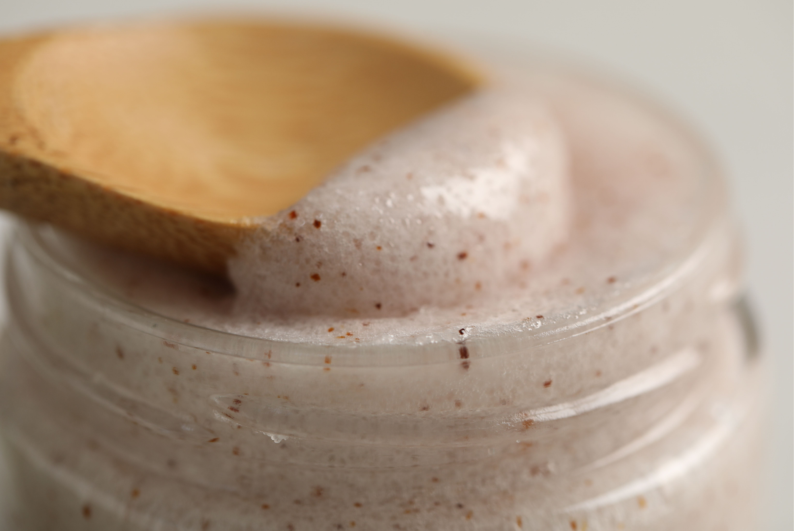
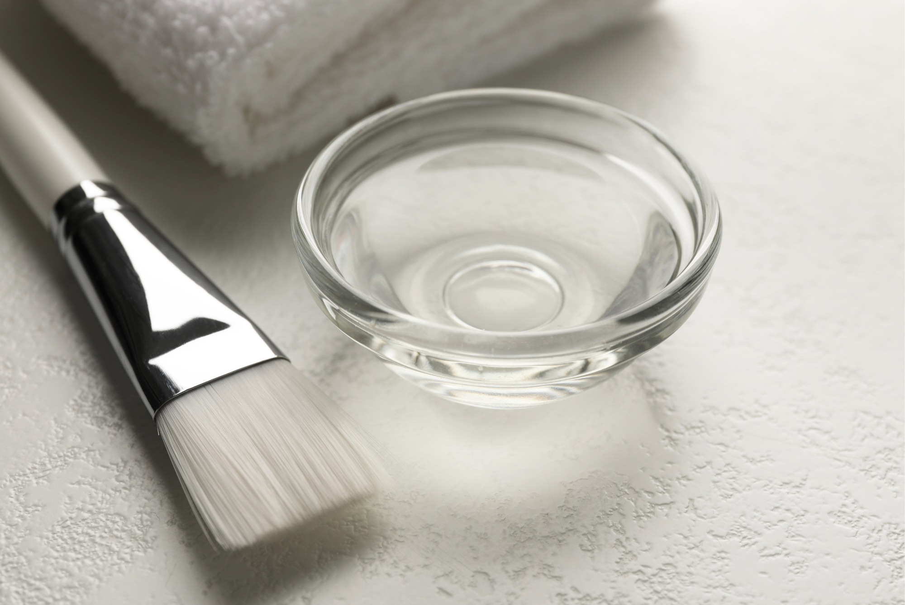

Exfoliation has somehow become one of those skincare steps where more is supposed to mean better.
Scrub until your face feels smooth. Use an acid toner. Add an exfoliating mask. Maybe throw in an exfoliating cleanser for good measure.
Then wonder why your skin is red, tight, flaky, breaking out, and suddenly offended by the moisturizer you’ve used for three years.
The problem isn’t exfoliation itself.
Removing excess dead skin cells can make skin feel smoother and can improve the appearance of dullness, uneven texture, and clogged pores. The problem is that physical and chemical exfoliants work very differently — and neither one needs to be used as aggressively as TikTok might suggest.
So what actually is the difference?
And how often should you be exfoliating?
First: What Is Exfoliation Actually Doing?
Your skin naturally sheds dead cells from its surface.
That process is called desquamation, and it is happening whether you own an exfoliating toner or not.
Exfoliating products essentially intervene in that process.
Physical exfoliants do it mechanically. Chemical exfoliants use ingredients that loosen the connections between dead cells or otherwise promote their removal.
The marketing version is usually something along the lines of:
Simple.
The less glamorous version is that your skin already has a system for removing dead cells. Exfoliation is an additional intervention — not a mandatory maintenance appointment.
And because the goal is to remove excess buildup, doing more does not automatically make the process more effective.
Sometimes it just makes your skin angry.
Physical Exfoliants: The Scrubbing Situation
Physical exfoliation is exactly what it sounds like.
Something physically rubs against the skin to help remove surface cells.
This can include:
- Face scrubs containing particles.
- Exfoliating brushes.
- Cleansing tools.
- Washcloths.
- Powder cleansers that become abrasive when mixed with water.
- Professional treatments such as microdermabrasion.

The obvious advantage is that you can immediately feel the effect.
Your skin feels smoother because you’ve physically altered the surface.
But that sensation can become a trap.
Useful, But Easy to Overdo
The problem with physical exfoliation isn’t that friction is inherently harmful.
It’s that consumers tend to interpret “more friction” as “more exfoliation.”
It isn’t.
Scrubbing harder doesn’t necessarily produce better results. It can simply increase irritation, especially if the particles are rough, the pressure is excessive, or the product is being used too frequently.
And if you’re already using retinoids, acne treatments, exfoliating acids, or other irritating products, adding an aggressive scrub on top can be a very fast way to turn a normal skincare routine into a barrier-repair project.
You don’t need to scrub it until it shines.
Chemical Exfoliants: The Acid Shelf

Chemical exfoliants work differently.
Instead of relying primarily on friction, they use ingredients that help loosen and remove dead skin cells.
The most common categories you’ll see are:
AHAs
Alpha hydroxy acids include ingredients such as glycolic acid and lactic acid.
They are generally used to exfoliate the skin’s surface and are often marketed for dullness, uneven texture, and the appearance of fine lines.
BHAs
The most famous BHA is salicylic acid.
Unlike water-soluble AHAs, salicylic acid is oil-soluble, which is one reason it is particularly popular in products aimed at oily or acne-prone skin.
PHAs
Polyhydroxy acids are generally larger molecules than AHAs and tend to penetrate the skin more slowly.
They’re often positioned as a gentler alternative for people who don’t tolerate stronger exfoliating acids well.
But here’s the part the labels don’t always emphasize:
An acid can still irritate your skin.
Concentration, formulation, pH, frequency of use, and your own skin tolerance all matter.
A 10% acid used twice a week isn’t the same thing as a lower-concentration product designed for frequent use.
And “it’s a chemical exfoliant” is not a free pass to use it every night.
So Which One Is Better?
Neither.
That answer is considerably less exciting than “chemical exfoliants are superior,” but it is also more useful.
Physical and chemical exfoliants simply approach the same general goal differently.
| Physical Exfoliant | Chemical Exfoliant | |
|---|---|---|
| How it works | Friction removes surface cells | Ingredients help loosen/remove dead cells |
| Examples | Scrubs, brushes, cloths | AHAs, BHAs, PHAs |
| Immediate sensation | Often very noticeable | Can feel like little is happening |
| Main concern | Excessive friction | Irritation from overuse |
| Best approach | Gentle pressure, limited frequency | Follow product directions and start slowly |
The better choice depends on your skin, the formulation, and how your skin responds.
Not which category has the prettier TikTok shelf.
How Often Should You Exfoliate?
This is where skincare advice tends to become unnecessarily complicated.
There is no universal number that every face needs.
Some people can tolerate exfoliation several times a week. Others find that even occasional use causes irritation.
Instead of treating exfoliation like a daily vitamin, think about it as an optional treatment.
If You’re New to Exfoliation
Start with once a week.
That’s enough to see how your skin responds without immediately committing to a seven-night experiment.
If your skin tolerates it well, you can potentially increase frequency depending on the product’s directions and your skin’s needs.
You do not get bonus points for graduating to nightly exfoliation.
If You Have Oily or Acne-Prone Skin
You may benefit from a chemical exfoliant such as salicylic acid, particularly if clogged pores are one of your concerns.
But oily skin is not invincible skin.
It’s entirely possible to have oily skin and an irritated skin barrier at the same time.
If your face starts feeling tight, burning, unusually dry, or more sensitive, reducing exfoliation may be more useful than adding another acne product.
If You Have Dry or Sensitive Skin
Less is usually more.
Consider starting with a gentler exfoliant at a lower frequency, or skip exfoliation entirely while your skin barrier is irritated.
If moisturizer suddenly burns after you apply it, this is probably not the moment to introduce an exfoliating peel because someone on Instagram promised “glass skin.”
If You’re Already Using Retinoids or Other Actives
Pay attention.
Retinoids, acne treatments, exfoliating acids, and other active ingredients can all contribute to irritation.
Adding an exfoliant doesn’t automatically improve the routine.
Sometimes it just increases the total irritation load.
Your skin does not care that the products came from different categories.
It experiences the combination.
Red Flags You’re Exfoliating Too Much
Watch for:
- Persistent redness.
- Burning or stinging.
- Tightness after cleansing.
- Peeling or flaking.
- Increased sensitivity to products you normally tolerate.
- A sudden rough or shiny appearance.
- Skin that feels unusually dry despite moisturizing.
- More irritation after applying active ingredients.
And perhaps the biggest red flag:
That’s how a $15 exfoliating toner turns into a $150 “barrier repair” routine.
Can You Use Physical and Chemical Exfoliants Together?
Technically, yes.
But “can” and “should” are different questions.
Using a scrub in the morning, an AHA at night, and a salicylic-acid cleanser every day may sound like an extremely thorough exfoliation routine.
It can also be an extremely efficient way to overdo it.
If you want to use multiple exfoliating products, consider separating them rather than stacking them together.
And when you’re introducing a new active, introduce it on its own.
That way, if your skin reacts, you actually know what caused it.
What to look for
One exfoliating method, at a frequency your skin actually tolerates.
What to stop doing
Adding five new products on Sunday night and guessing which one caused the reaction.
This is less exciting than adding five new products on Sunday night.
It is considerably more useful.
The Bottom Line
Physical exfoliants aren’t automatically damaging.
Chemical exfoliants aren’t automatically better.
And exfoliating every day isn’t the definition of having a good skincare routine.
The better approach is considerably less dramatic:
- Choose one exfoliating method.
- Start slowly.
- Use a small amount.
- Pay attention to your skin.
- Increase frequency only if your skin actually tolerates it.
If your face is burning, peeling, or suddenly reacting to products it used to tolerate, the answer probably isn’t a stronger exfoliant.
It’s probably less.
Because the goal of exfoliation isn’t to remove as much skin as possible.
It’s to remove what you don’t need without damaging what you do.
Sources: American Academy of Dermatology — guidance on how to safely exfoliate at home, exfoliation and skin type, and cautions on combining exfoliation with retinoids and other actives.